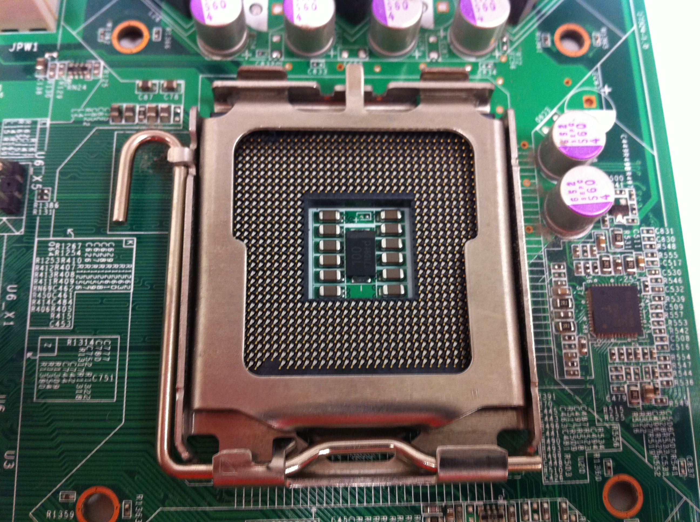

Moderkortet är defenetivt en av datorns viktigaste delar för att den fungerar som
datorns kommunikationscentral för att nästan alla delar är kopplad till den, alla
anslutningar går antingen från eller till moderkortet. Den består av flera olika
anslutningskontakter och dens uppgift är att se till att alla komponenter i datorn fungerar.